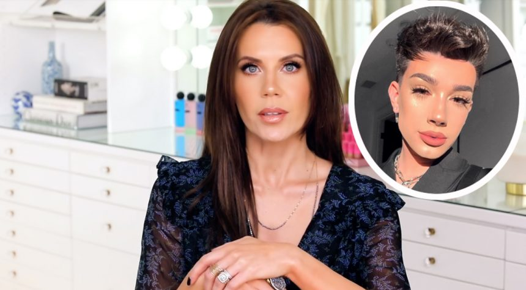

Creating account...
Anonymity undoubtedly has its perks. When you first create that anonymous account, you are virtually free to say anything to the internet world without having any reprocussions. However, there's always another side to the coin. Are the risks of anonymity worth the rewards? In this section, we'll discuss the drawbacks of anonymity, which often manifest in the form of hate crimes, cyberbulling, illegal discussions and child trafficking.
Cyberbullying
This video lists many different forms of cyberbullying. While some, like exclusion, involves familiar people to the victim, many, like stalking and stealing accounts, utilizes anonymity to fulfill these tasks. Around 37% of teens say they've been cyberbullied at some point in their life.
Cybercrime


- In 2006, the FBI cybercrime division was founded
- Adults can use an anonymous username to appear as children online, luring real children into compromising situations
- Illegal activity can be discussed freely
What Internet Users have to say:
Internet users value our anonimity. According to a Pew Research study, 68% of internet users think their privacy is not protected enough online. 50% of users are worried about how much information about them is online. The most important thing to keep hidden to them is their email information.
You may be thinking this has more to do with privacy. However, the two are closely related. One cyber security store put it this way: privacy is when users know who you are but cannot see what you type or do, while anonymity is when users can see what you do, but don't know who you are.
The James Charles Controversy: Abusing Anonymity
and James Charles because she called him out for not supporting her gummy
vitamins in the video Bye Sister.

The internet responded swiftly with hate for James. More hate comments began to build, with more and more internet users jumping on the hate bandwagon without learning the facts. After he posted an apology video, all of the commenters switched sides and deleted all of their hate comments. They were able to bully him to the point of self-hatred and then immediately change sides when the truth was revealed.
By hiding behind their screens, they could do all of it without consequence.
All of this controversy came from a false accusation, but ballooned into a flurr of hate comments that greatly impact one Youtuber's life. Youtubers are in the position where millions of people anonymously decide whether or not they're liked or not. Being hidden behind the screen makes them malicious without thinking of the consequences of their words.